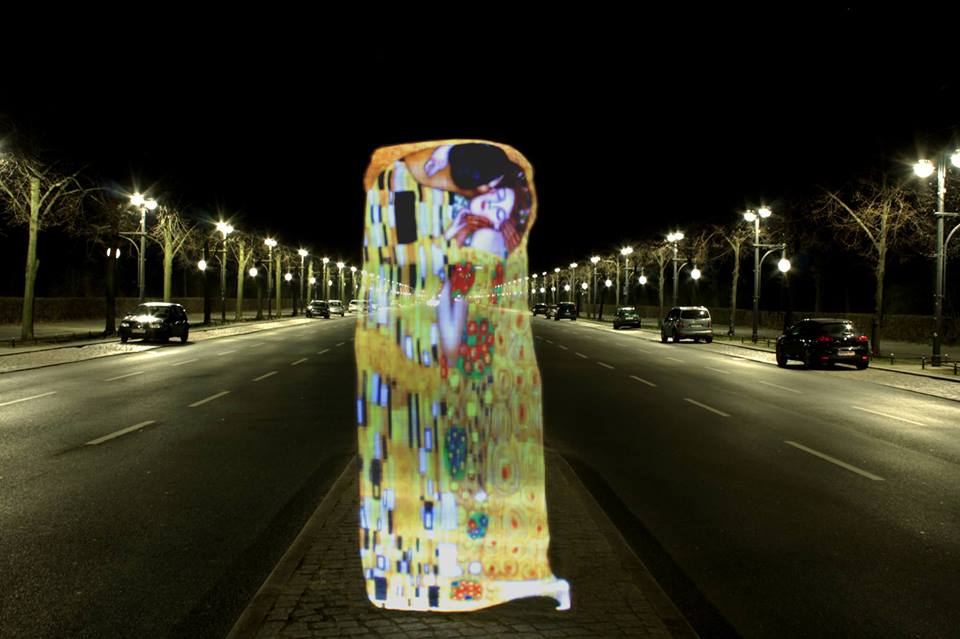
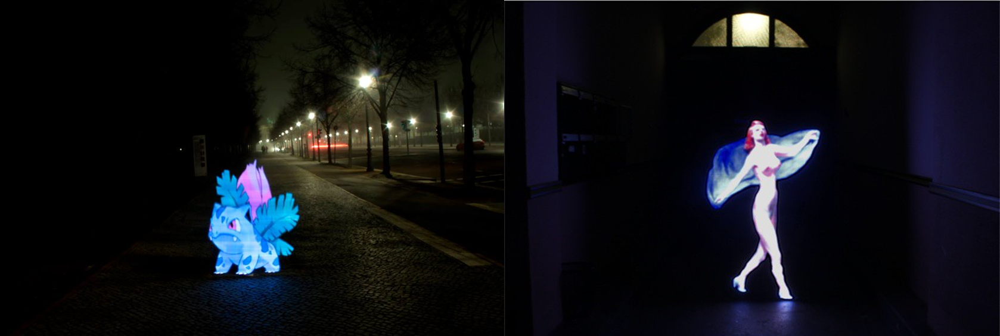
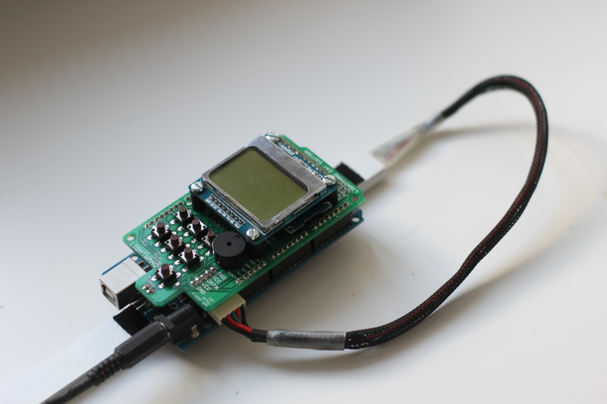

¿What is Lightpainting?
The origin of the Lightpainting technique is linked to the origin of photography itself. The first photographic panels, whose chemicals were extremely little sensitive to light, needed several minutes to properly capture an image. These first photographs often resulted in blurry figures that little resembled the customers portrayed. On contrast, any lamp or intruder light that travelled a path while the shutter was open, got immortalized in the photograph with great sharpness.
Etienne-Jules Marey and George Demeny decided to take advantage of this circumstance and in 1882 they inaugurated the Station Psicologique where they used different inventions and a primitive Lightpainting technique to study the human movement. The first image that made use of this technique is this one in which the human movement during a jump was studied:
 Figure 1: Athleth’s jump, Etienne-Jules Marey and Georges Demeny (1889)
Figure 1: Athleth’s jump, Etienne-Jules Marey and Georges Demeny (1889)
Since then, a lot of enthusiasts and artists have developed techniques and tools to get the Lightpaint a step forward. Light Spheres, texturized light and different stencils, but nothing as advanced as the LightWand.
¿What’s the LightWand?
Through LED technology and the indexed RGB LED stripes (individual control of each LED) made popular by Sparkfun, the same concept has been developed by different developers independently.
A LightWand is a LED bar controlled through a microcontroller that sequentially emit the pixel rows of an image. If, while the camera has the shutter open and a low ISO sensibility, the user displaces the LightWand through the frame, it results in an image that resembles a hologram and inserts the image into the photograph:


This tool went popular in the Internet due to a Kickstarter[1] by Bitbanger Labs in which they presented Pixelstick[2]. Pixelstick quickly achieved the amount of investment necessary for its development and nowadays is the only commercial option to get this tool. Sadly, its price is high (349$) and sells preferably to the US. Additionally, it is a commercial product and therefore it is not suitable for modifications or changes by the user, being limited to its original Firmware and Hardware.
But before Pixelstick, Michael Ross[3] -an American photography enthusiast with technique education – had already publish in his blog a primitive version of his LightWand . This tool didn’t achieve great repercussion due to its poor publicity and it resulted a little unattractive and hard to handle tool – But the idea and the program were great -.
During last year, I decided to build a LightWand for private uses. After several versions solving the different lacks of Michael Ross’s LightWand, I developed the LightWand Kosmonaut V1 that I documented and publishes in Github some months ago.
¿How is it?
My objective in this project was to make this version cheap, light and easy to build. For this reason I decided to use an Arduino Mega 1280 as the microcontroller and a Neopixel 144LED/m LED stripe. The result is a compact controlled based on an Arduino Shield PCB that includes a Nokia 5110 screen for monitoring and some minor extra functionalities as a Buzzer and external connections.
The LightWand Kosmonaut reads the images stored in a microSD card in .pnm format and projects them through the LED stripe, allowing the user the control over the brightness and the delay between each pixel row.
It has a 1m length (defined by the LED stripe longitude) but it can programed to control multiple LED stripe with different lengths and densities. One of the dimensions of the projected images is the limited by the LED stripe used while the other dimension can have several meters.


The main problem this tool has is that the result of the photograph depends on the speed at which the user makes the movement, being the result sometimes unpredictable. In the following sequence three examples are shown of the shots in the same conditions but with different results.

Afterwards, the photograph can be improved with slight brightness and contrast corrections with any photo edition software.
The price of the LigthWand Kosmonaut purchasing the material through Ebay or Aliexpress is of around 50€ (Depending on the €/$ fluctuations), being a very economic and reliable alternative to Pixelstick for those users with enough knowledge to build it.
¿Which were the main difficulties?
The LightWand I have developed has gone through many stages, from the first 60LED/m version whose results were not acceptable to not stable non-PCB versions.

One of the main initial problems was to use Arduino UNO, with a very limited SRAM that was not able to handle the Neopixel library, the Nokia 5110 screen and the microSD (That loads in the RAM the whole file, not allowing a sequential read). The limitations of the Arduino UNO and the lack of debugging lead to the use of the Arduino MEGA 1280 (Also cheap and a lot more powerful).
After the first prototype I discovered the work of Michael Ross and I implemented one of his functions and a couple advises regarding his failed experiments with the Arduino UNO.
The last step was to create the PCB reducing its dimensions to a Arduino Shield and documenting the whole project along with a guide that covered the whole process. All the necessary documentation can be found in Github:
https://github.com/PabloDMM/LightWand_KosmonautEd
¿What is left to be done?
The next steps to be done for posterior versions of the LightWand Kosmonaut are:
- Implement the reading of .bmp files (A lot more common than .pnm)
- Implement an accelerometer to automatically control the sequence of pixel rows. This would inhibit the human mistake of the process.
- Implement Bluetooth connectivity (Not with a specific objective yet).
- Develop a mechanism to make the LightWand more portable.
Away from the technics, the main objective is to create a small community of users using it and developing upgrades and share them through the web. In this direction, the publicity made thorough the social networks (FB, Instagram[4]) have been useless. During the 2015/2016 academic year AETEL plans to make a workshop with CAT in which assistants can buy and build a LightWand, expanding its presence at least in a local spectre.
[1] Pixelstick – Lightpainting Evolved(2013), Bitbanger Labs, Kickstarter project, https://www.kickstarter.com/projects/bitbangerlabs/Pixelstick-light-painting-evolved
[2] Pixelstick Homepage(nd), Bitbanger Labs, http://www.thePixelstick.com
[3] Michael Ross Photography and Light Painting (2014), Michael Ross, http://mrossphoto.com/wordpress32/
[4] Instagram Profile (2015), Arsene_lupin_LightWand , https://instagram.com/arsene_lupin_LightWand /